История Сочи
История Сочи начинается задолго до основания самого города. Археологические находки свидетельствуют о том, что первые люди поселились на территории современного Сочи около 100 тысяч лет назад. Наиболее известная стоянка древнего человека находится в Ахштырском ущелье и датируется эпохой Нижнего Палеолита.
Официально город был основан в 1838 году под названием “Форт Александрия”. Однако своё современное название он получил лишь спустя 60 лет. Существует мнение, что название “Сочи” происходит от одноимённой реки, хотя некоторые историки связывают его с племенем, которое когда-то населяло эти земли.
В прошлом Сочи был местом ссылки каторжников из-за своего гиблого климата, бескрайних болот и засилия малярийных комаров. Однако благодаря усилиям выдающегося бактериолога-маляриолога Сергея Соколова, разработавшего комплекс мер по борьбе с малярией, удалось победить эту болезнь. Последний случай малярии был зафиксирован в Сочи в 1956 году.
Культура Сочи
Сочи является одним из самых престижных курортов России и расположен на широте Ниццы, Канн и Монте-Карло. Город славится своими культурными достопримечательностями, среди которых выделяются:
- Летняя резиденция Президента России;
- Смотровая башня на горе Ахун, построенная политзаключёнными за 101 день;
- Сочинская Олимпиада, подготовка к которой обошлась в более чем 50 миллиардов долларов и стала самой дорогой в истории Олимпийских Игр.
Интересные факты о Сочи
- В летний туристический сезон население города увеличивается в 7 раз, достигая цифры в 2,5 миллиона человек.
- Среди выдающихся уроженцев Сочи можно назвать Михаила Галустяна, Андрея Гейма (лауреата Нобелевской премии по физике 2010 года), Георгия Лепса, Стаса Михайлова, Бориса Немцова, Славу Метревели, Евгения Кафельникова и Андрея Григорьева-Аполлонова.
- В Сочи снимались фильмы, вошедшие в золотую копилку отечественного кинематографа, такие как “Старик Хоттабыч”, “Приключения Принца Флоризеля”, “В городе Сочи тёмные ночи” и другие.
- Среди известных жителей Сочи был и Иосиф Виссарионович Сталин, который, однако, посещал город инкогнито.
Достопримечательности Сочи
| Красная Поляна | |
|---|---|
| Это горнолыжный курорт, расположенный в Краснодарском крае, в 40 км от Адлера. Курорт предлагает разнообразные трассы для катания на горных лыжах и сноубордах, а также развитую инфраструктуру для отдыха и развлечений. Летом здесь можно заняться хайкингом, велоспортом, конным спортом и другими активностями. | 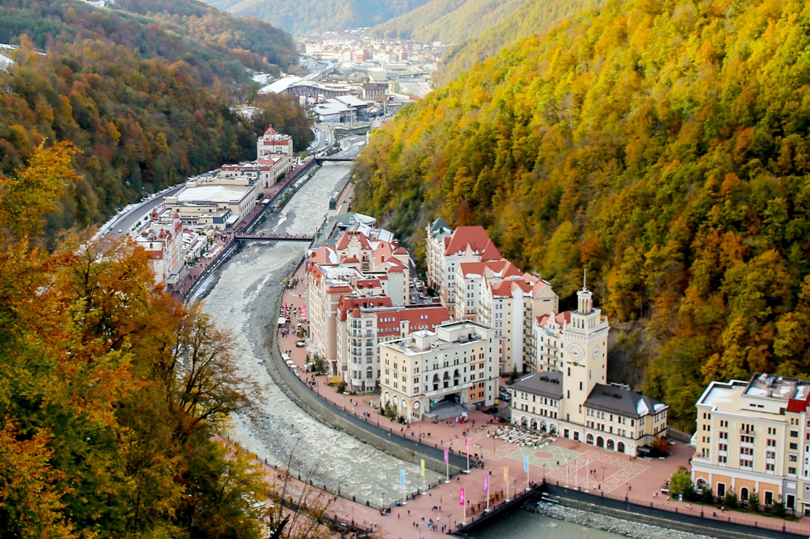 |
| Олимпийский парк | |
| Это комплекс сооружений, построенный к зимним Олимпийским играм 2014 года в Сочи. Парк расположен в Имеретинской низменности и включает в себя несколько спортивных объектов, таких как стадион “Фишт”, ледовый дворец “Большой” и другие. В центре парка находится Чаша Олимпийского огня, которая вечером превращается в светомузыкальный фонтан. | 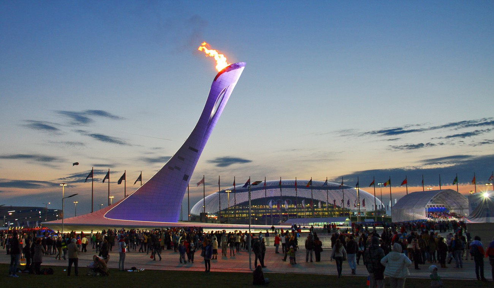 |
| Набережная | |
| Это одно из самых популярных мест в Сочи. Набережная протянулась вдоль Чёрного моря и предлагает прекрасные виды на море, горы и городские пейзажи. Здесь можно прогуляться, посидеть в кафе или ресторане, послушать живую музыку и просто насладиться атмосферой курортного города. | 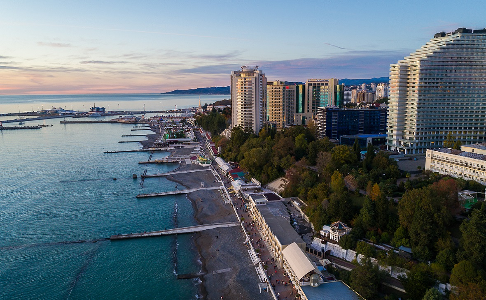 |
Развлечения в Сочи
|
Парк «Дендрарий» 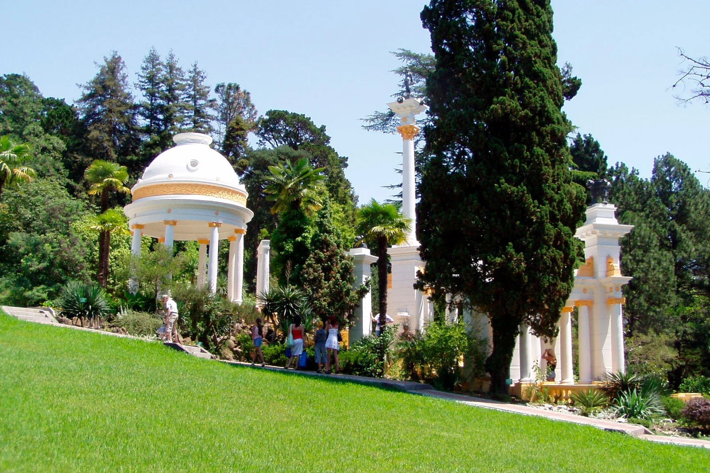 |
Навагинская улица 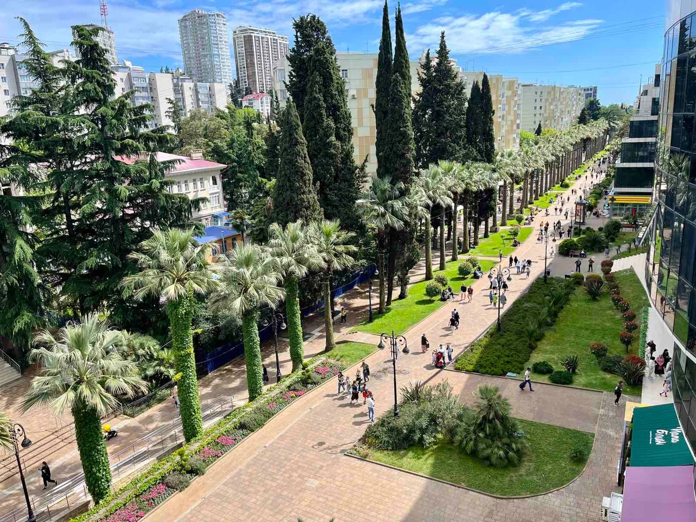 |
Морской вокзал 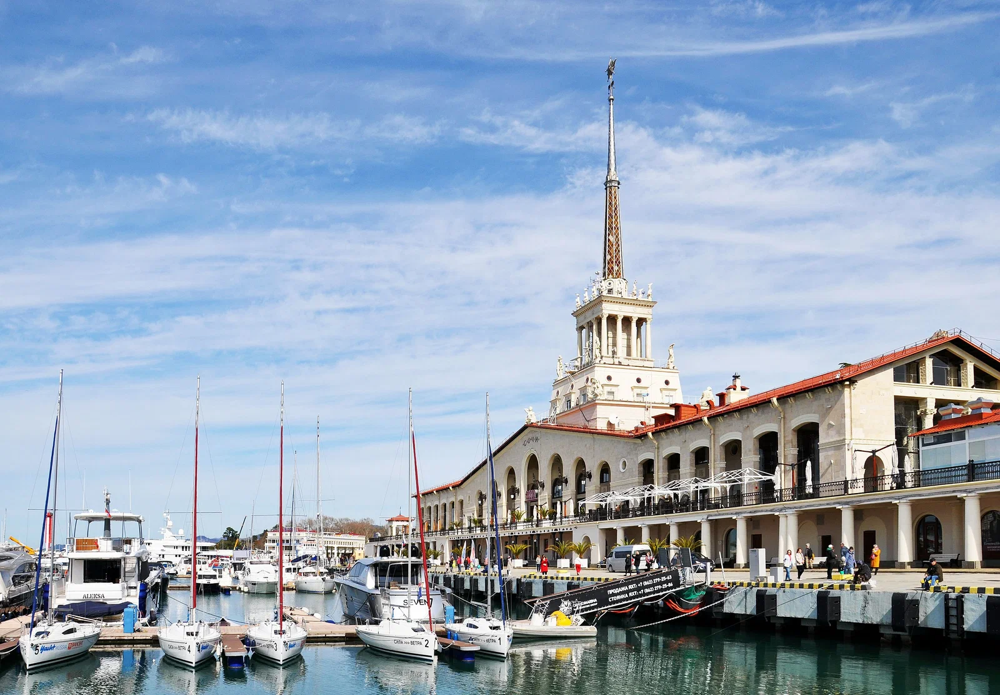 |
| Парк «Ривьера» 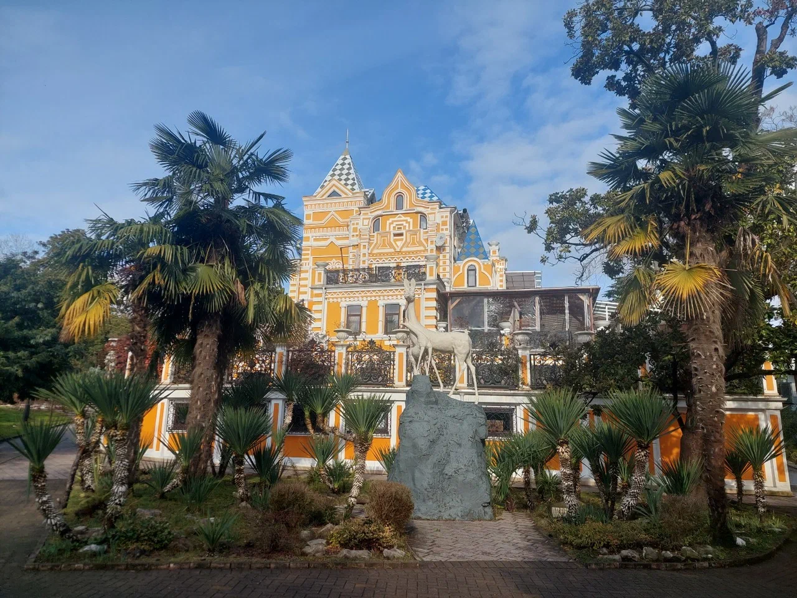 | Тисо-самшитовая роща 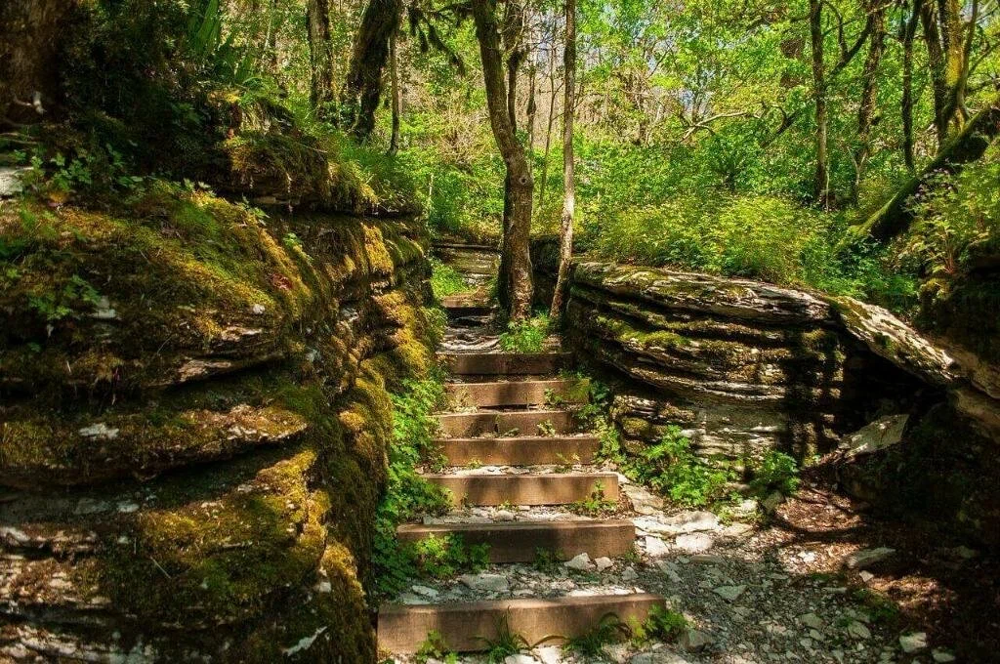 |
Skypark 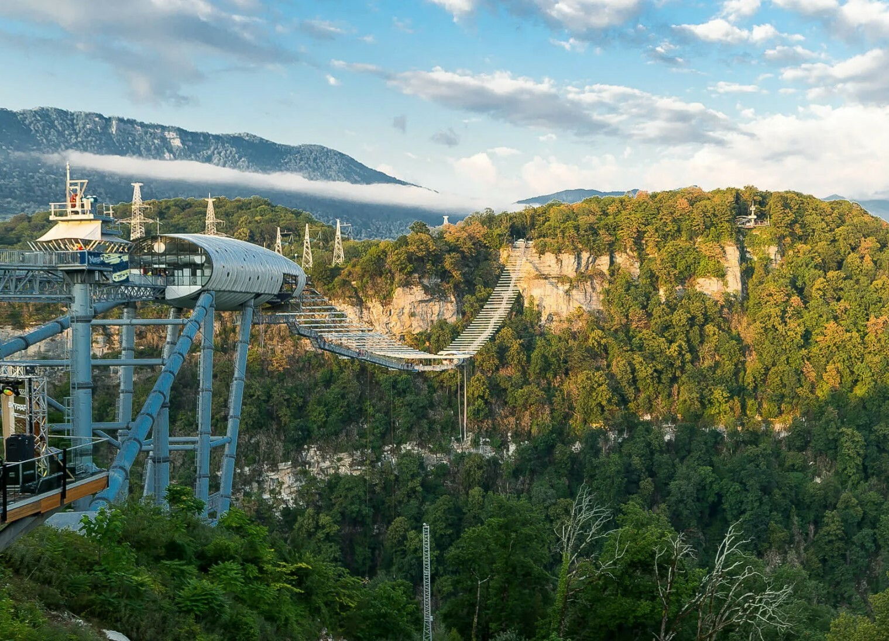 |
| Олимпийский парк 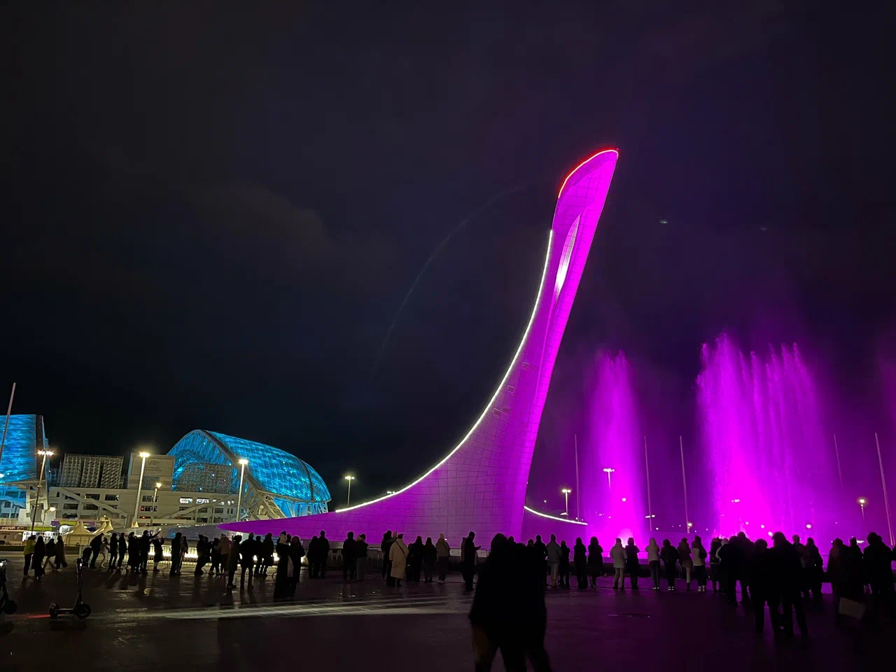 | Сочи Парк 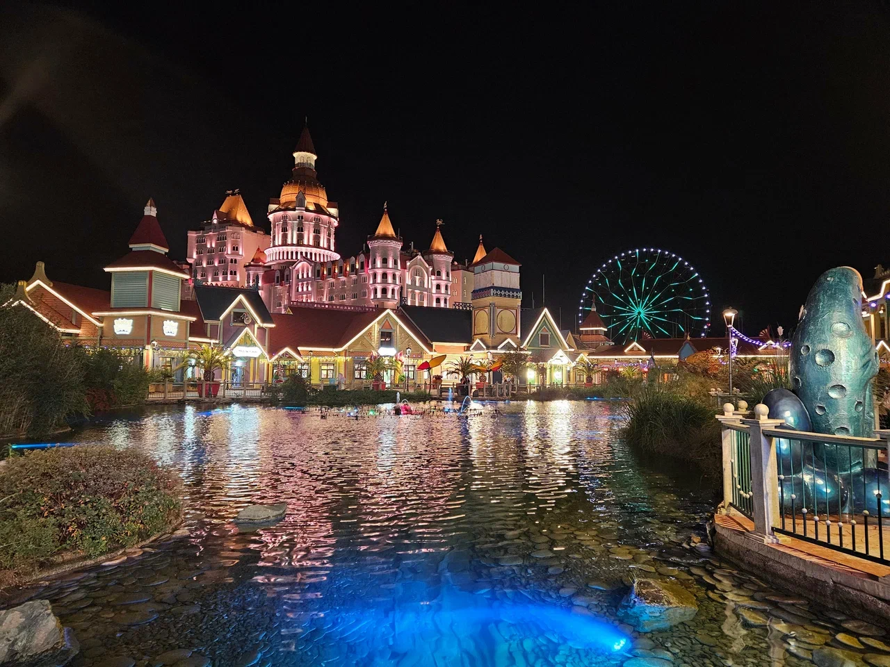 | Художественный музей 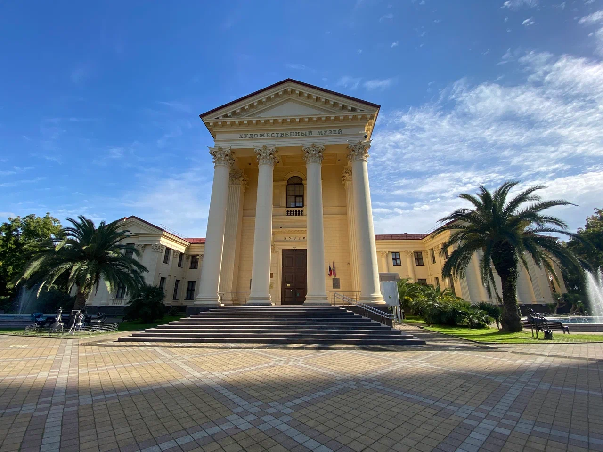 |
Советы туристам
- В городе бывают сильные пробки. Если вы едете на своей машине, оставьте её у отеля и пересядьте на велосипед. Пользуйтесь также такси, автобусом или электричкой.
- Чтобы быть ближе к самым крутым местам Сочи и ресторанам, выбирайте отели в Центральном или Адлерском районах.
- Совмещать пляжный отдых с экскурсионным лучше всего в июне или сентябре. В это время на улице не так жарко, как в июле и августе, а вода в море прогрета до +22…+24 °С.
- Сочи — единственный морской курорт на юге России, до которого сейчас можно быстро добраться на самолёте. Посмотреть расписание и купить билет на самолёт можно на сайте и в приложении Яндекс Путешествий.
- Красивые горные маршруты недалеко от Сочи расположены на курорте Красная Поляна. Летом тут поднимаются на гору Ачишхо и хребет Аибга. На выбор около 20 экотроп, на сайте можно выбрать подходящую и сразу купить прогулочный билет.